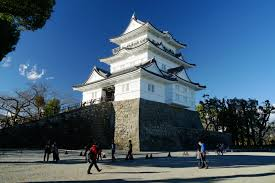
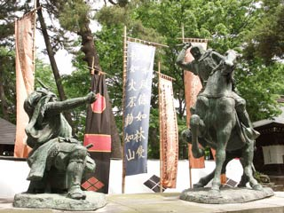
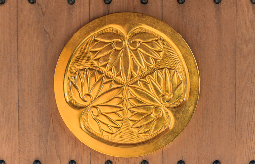

El caos del Japón medieval
El periodo Sengoku (1467–1603) fue una etapa completamente caótica en la historia de Japón. Tras la caída del poder central, los grandes
señores feudales o "daimyō" comenzaron a luchar entre sí por el control de las tierras y la autoridad sobre el país. Fue una época en la
que las traiciones, los asedios y las batallas eran el pan de cada día.
Las alianzas se formaban y rompían constantemente, y el honor de los samuráis se ponía a prueba en cada guerra. Fue también una época de
innovación militar, donde las armas de fuego llegaron desde Europa y cambiaron para siempre el modo de luchar. Sin embargo, entre tanta
violencia también surgieron figuras que marcaron el rumbo de Japón para siempre.
“El hombre que desea gobernar debe estar dispuesto a sacrificarlo todo.” — Oda Nobunaga
Clanes más conocidos
Clan Oda

El clan Oda, liderado por Oda Nobunaga, fue uno de los más influyentes del periodo Sengoku. Su estrategia militar, basada en disciplina, innovación
y el uso de armas de fuego, lo convirtió en un líder imparable. Nobunaga no creía en las tradiciones antiguas: destruyó templos que se oponían a él,
cambió las reglas del comercio y promovió la modernización.
Aunque muchos lo consideraban cruel, fue el primero en pensar en un Japón unificado. Murió traicionado por uno de sus generales, Akechi Mitsuhide, en
el famoso Incidente de Honnō-ji, pero su visión continuó viva a través de sus sucesores.
Clan Takeda
El clan Takeda, encabezado por Takeda Shingen, fue sinónimo de poder militar. Shingen era un genio de la estrategia y dominaba la región de Kai. Su
ejército era conocido por su velocidad y coordinación, especialmente su legendaria caballería. En el campo de batalla, los estandartes del clan ondeaban
con el lema: “Rápido como el viento, silencioso como el bosque, feroz como el fuego y firme como la montaña”.
Su enfrentamiento con Uesugi Kenshin se convirtió en una rivalidad tan intensa que aún hoy se recuerda como una de las más famosas de la historia
japonesa. Se dice que Shingen era respetado incluso por sus enemigos, algo que no era común en tiempos tan duros.
Clan Uesugi

El clan Uesugi, bajo el mando de Uesugi Kenshin, era conocido tanto por su fuerza militar como por su devoción espiritual. Kenshin era profundamente
religioso, seguidor del dios Bishamonten, protector de los guerreros. Antes de cada batalla, realizaba rituales y oraciones, convencido de que su
deber era luchar con justicia y sin rencor personal.
Su relación con Takeda Shingen fue una mezcla de rivalidad y respeto mutuo. En una ocasión, cuando el clan Takeda se quedó sin suministros, Kenshin
envió arroz como ayuda a su enemigo. Ese gesto de honor convirtió su rivalidad en leyenda.
Clan Tokugawa

El clan Tokugawa, dirigido por Tokugawa Ieyasu, representó la paciencia y la estrategia a largo plazo. Durante años permaneció en las sombras, observando
cómo otros se destruían entre sí. Finalmente, cuando el momento fue propicio, Ieyasu tomó el control del país tras la decisiva batalla de Sekigahara en 1600.
Su victoria no solo puso fin al caos del Sengoku, sino que dio inicio al shogunato Tokugawa, una era de paz y estabilidad que duraría más de dos
siglos y medio. Ieyasu fue el arquitecto del Japón moderno y su legado se siente incluso hoy.
El legado del Sengoku
El periodo Sengoku fue más que una época de guerras: fue el nacimiento de la política moderna en Japón. Las alianzas, la diplomacia y las reformas militares
dieron forma al país que surgiría después. También fue un momento en el que el honor samurái se redefinió, pasando de la gloria en el campo de batalla al
control del país mediante el orden y la estabilidad.
Sin el Sengoku, Japón nunca habría conocido la paz del periodo Edo. Fue un tiempo duro, pero también el más fascinante de la historia japonesa, donde héroes, traidores
y visionarios forjaron un nuevo destino para toda una nación.